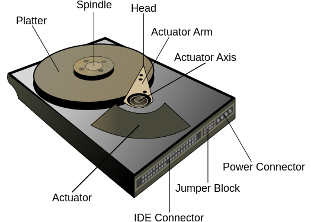
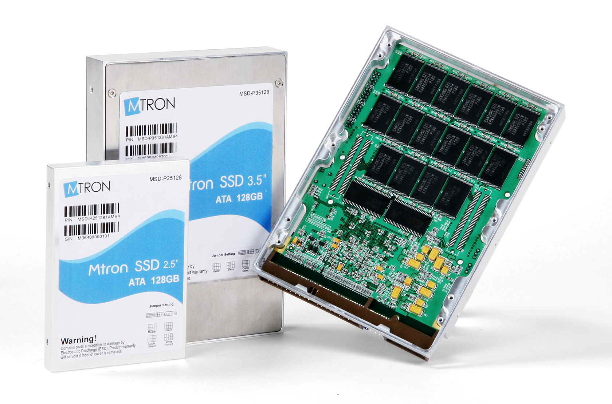
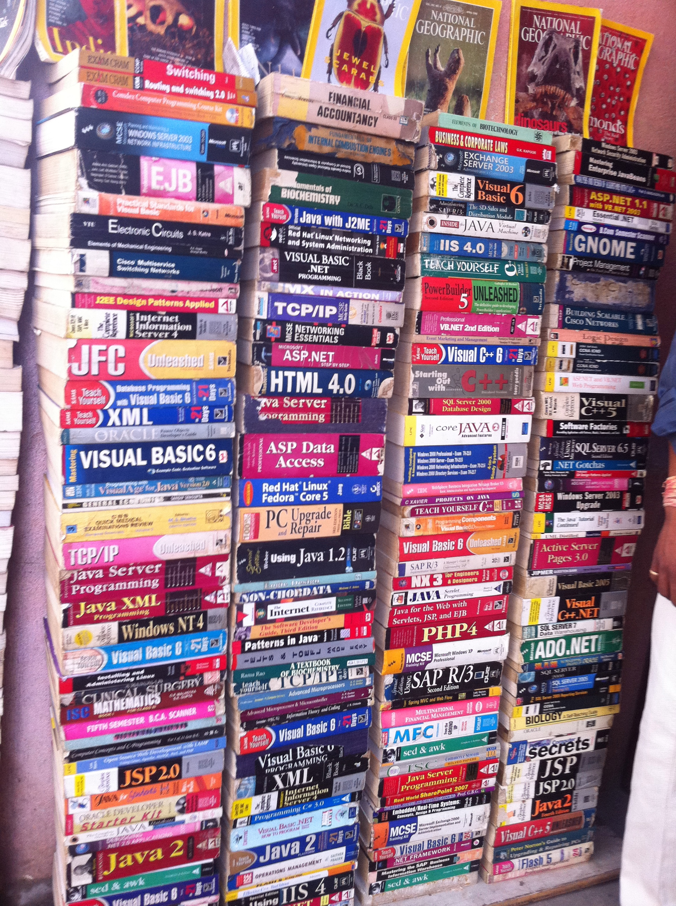
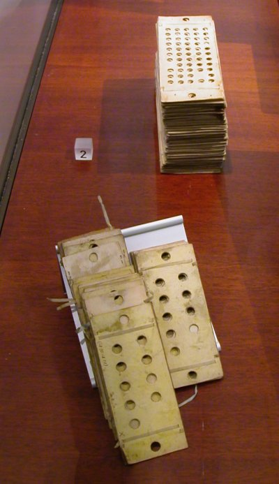

Modul 3 - Datamaskinen
Datamaskinen
Fra da til nå
De aller fleste vet at PC står for Personal Computer, eller personlig datamaskin på norsk.
Men de første datamaskinene som ble bygget var langt fra personlige.
De var store, tunge maskiner som ofte tok opp hele eller store deler av rom.
De var ekstremt dyre og krevde gjerne et eget team med vitenskapspersonell for å operere og vedlikeholde maskinene.
ENIAC
Electronic Numerical
Integrator and Computer var navnet på den aller første programmerbare datamaskinen.
Den var Turing-komplett, digital og sies å kunne løse haugevis med numeriske operasjoner.
Den ble tatt i bruk i 1946 med den hensikt å regne ut ballistiske missilbaner for den amerikanske hæren.
ENIAC skal ha klart å regne ut baner som tok et menneske 20 timer å regne ut på knappe 30 sekunder.
Det sier litt om hvor effektivt datamaskiner kan løse matematiske utregninger.

Hva Turing-kompletthet er kan du lese mer om her.
Men i korte trekk betyr det at den kan utføre alt en standard programmerbar datamaskin kan gjøre.
I enda kortere trekk betyr det at en kan programmere den akkurat sånn man vil.
Fra da til nå 2
Før i tiden var datamaskiner store investeringer og var omtrent bare å finne på universiteter.
De ble hovedsaklig brukt til å utføre mange store og tunge utregninger på kort tid.
Tidlige datamaskiner brukte vakuumrør til å flytte elektriske signaler fra ett sted i maskinen til et annet.
Maskiner var også avhengige av at mennesker manuelt styrte strømmen dit den skulle.

Så til tross for at datamaskinene var programmerbare og raske til å regne ut matematiske problemer, så var det fortsatt en del fysisk menneskelig innblanding i bruk av datamaskinene.
Mikroprosessoren
Det kom en revolusjon innen dataverdenen på tidlig 70-tallet.
Ingeniører hadde klart å lage en mikroskopisk versjon av de hittil store prosessorene.
Intel skriver selv at deres første mikroprosessor, Intel 4004 skal ha hatt en størrelse på en fingernegl og en like stor datakraft som den første datamaskinen, som tok opp et helt rom (ENIAC).

De nye prosessorene kunne kjøre programmer slik de eldre, store prosessorene kunne.
De kunne også lagre informasjon og håndtere data helt selv.
Dette gjorde at datamaskiner kunne lages mindre,
raskere og billigere.
En konsekvens av små, billige og kraftige prosessorer ser vi i dagens datamaskiner.
Maskinene blir stadig mindre og lettere, samtidig som de blir raskere og billigere.
Moore's Law tilsier at hvert andre år så dobles antall transistorer i en prosessor.
Dette vil si at for hvert andre år, så vil nye prosessorer kunne yte dobbelt så bra som deres forgjengere.
I dag
PC'er er mer eller mindre allemanseie, i hvert fall hvis man tenker på de vestlige land.
Internett har blant annet gjort slik at folk bruker mer tid på datamaskinene enn tidligere.
Det er en utrolig stor nyttverdi av internett, både i jobb- og underholdningssammenheng m.m.
Det er også offentlige krav som tilsier at enkelte tjenester skal være tilgjengelig på nett.
Eksempelvis Digipost, skattemelding (Altinn) og e-resept.
De aller fleste har flere datamaskiner.
Gjerne en laptop, en mobiltelefon, et nettbrett og kanskje en spillkonsoll og/eller en stasjonær datamaskin.
Hovedkomponenter
Hovedkomponentene i en datamaskin er som følger:
-
Prosessor eller
CPU (Central Processing Unit)


-
Primærminne, eller
RAM (Random Access Memory)

-
Sekundærminne, eller
HDD/SSD (Hard Disk Drive/Solid State Drive)


- (Man tar gjerne med grafikkort også, for å få GUI (grafisk brukergrensersnitt))


Alle disse komponentene blir (sammen med flere) plassert på, eller koblet til et hovedkort
Komponentenes oppgaver
Prosessor: Ta imot, regne på og sende elektriske impulser videre. Hastigheten en CPU jobber på (klokkefrekvens) er gitt i (Giga)Hz.
Primærminne: Lagre data i en kort periode.
Er avhengig av strøm for å virke.
Sekundærminne: Lagre data over lang tid.
Er ikke nødvendig å ha strøm, så lagringen er permanent. Selv når maskinen er avskrudd.
Grafikkort: Vise grafikkpunkter(pixler) på en skjerm.
Hovedkort: Koblingspunkt for de overnevnte komponenter, med andre viktige funksjonaliteter. Blant annet BIOS.
Oppgaver til modul 3
Modul 4 - Programmeringsspråk
Språk

Et programmeringspråk er et formelt språk med gitte regler som bestemmer et sett med instruksjoner som kan benyttes for å oppnå diverse mål.
Enklere sagt så er det et språk, like fullverdig norsk og engelsk, med egne regler for bygging av "setninger" (gyldig kode).
Det finnes en lang rekke med ulike programmeringsspråk.
Noen vil kalle de forskjellige typene for dialekter istedenfor språk, gjerne fordi de fleste programmeringsspråk er veldig like og alle har som formål å snakke datamaskinens språk.
De ulike programmeringsspråk har gjerne sine egne foretrukne brukområder og alle har hver sine fordeler og ulemper.
Eksempler på dette kan være hastighet, størrelse, kompleksitet og brukervennlighet.
Historie

De tidligste datamaskinene ble ikke programmert ved bruk av tekst-språk slik de aller fleste språk i dag er.
For eksempel så ble ENIAC programmert ved hjelp av fysiske svitsjer.
Det kunne ta dager for å koble opp svitsjene og kablene i korrekt konfigurasjon, og dette etter at selve "programmet" var skrevet ferdig på papir.
Det har også vært brukt hullkort flittig frem til midten av 70-tallet.
Hullkort er enkelt forklart et papirkort med instruksjoner gitt i form av en rekke hull på spesifikke plasser på kortet.
Hullkort ble blant annet brukt til lagring av informasjon og gi instruksjoner for å programmere en maskin.

Høynivå vs. lavnivå språk
Vi kategoriserer ofte programmeringsspråk som høynivåspråk eller lavnivåspråk.
Kategoriene høy og lav sier vi at beskriver abstraksjonsnivået.
Med andre ord så beskriver nivåene hvor langt "unna" vi er fra maskinkode, og hvor mye vi får "tilgang til" fra språket alene.
Abstraksjon
"Abstraksjon, (til abstrahere), noe som bare er tenkt og ikke-anskuelig, som mangler konkret og sansbar virkelighet." - Store Norske Leksikon
All kode, uansett programmeringsspråk, må en eller annen gang ende opp helt nederst i maskinen (impulsnivå).
Abstraksjonsnivåene skiller på antall steg, altså hvor "lang vei", det er mellom språket selv og impulsnivået, eller maskinkode.
Noen generaliseringer:
-
Jo lavere nivå et språk er, desto raskere kan programmet kjøre.
-
Jo høyere nivå et språk er, desto lettere er det å lese og lære å lage/programmere i.
Eksempel på språk og abstraksjonsnivåer
SQL - deklarativt, nesten som talespråk (ikke egentlig programmeringsspråk).
Eks:
SELECT * FROM employees WHERE name="john"
Python / Ruby - lar deg se bort fra detaljene som Java/C++ osv.
Eks:
number1 = 20
number2 = 10
sum = number1 + number2
Java / C# - en god del abstraksjon, har f.eks. ikke direkte tilgang til RAM.
Eks:
public class Calculator {
public static void main(String[] args) {
int number1 = 20;
int number2 = 10;
int sum = number1 + number2;
}
}
C++ - de samme mulighetene som C, men kan abstrahere mer.
C - kan abstrahere, men har direkte tilgang til RAM.
Eks:
#include
int main(){
int number1 = 20;
int number2 = 10;
int sum = number1 + number2;
return 0;
}
Assembly - skriver instruksjoner/kommandoer til prosessoren.
Eks:
IMM R0, 0x80
LOAD R0, R0
IMM R1, 0x84
LOAD R1, R1
IMM R2, 0x0
IMM R3, 0x4
IMM R4, 0x0
IMM R5, 0x1
STORE R0, R2
ADD R0, R0, R3
ADD R4, R4, R5
BNE 0x20, R4, R1
Maskinkode - skriver så å si impulser til datamaskinen.
Eks:
0x 60 00 00 80
0x A4 00 00 00
0x 60 01 00 84
0x A4 01 01 00
0x 60 02 00 00
0x 60 03 00 04
0x 60 04 00 00
0x 60 05 00 01
0x 08 00 00 02
0x 20 00 00 03
0x 20 04 04 05
Java - et populært språk

Noen faktorer til at Java er blant de mest populære språk i dag er:
-
Java er en god blanding mellom enkelthet i å lese/lære/lage og hastighet.
-
Java er et godt etablert og vedlikeholdt språk (det er eid og vedlikeholdt av Oracle, et privat firma)
-
Java er et sikkert språk - det har en "vakt" mellom programmet og datamaskinen (JVM)
-
Java skrives likt og fungerer likt på alle platformer (OS/hardware)
Noen andre programmeringsspråk
-
Objective-C - tidligere språk for OSX, iOS og apper, iPhone/iPad.
-
Swift - det nye og nåværende språk for iOS og apper, iPhone/iPad.
-
PHP - brukes på nettsider/nettløsninger.
-
JavaScript - brukes også på nettsider/nettløsninger.
-
R - brukes mye i statistikk og analyse i og mot datasett.
-
Matlab - brukes i matematisk sammenheng, grafer, likninger etc.
Pseudokode
Et "språk" det er viktig å nevne er pseudokode.
Pseudokode er ikke et ekte programmeringsspråk, men heller en måte vi mennesker kan beskrive løsningen av et problem eller stegene i en algoritme enkelt og forståelig.
Når man skriver pseudokode er det ofte vanlig å utelate spesifikke detaljer som er "åpenbare" for å øke lesbarhet uten å miste informasjon.
Eksempel på pseudokode fra wikipedia:
<variabel> = <uttrykk>
hvis <betingelse>
gjør noe;
ellers
gjør noe annet;
mens <betingelse>
gjør noe;
for <variabel> fra <første verdi> til <siste verdi> med <steglengde>
gjør noe med variabelen;
funksjon <funksjonsnavn>(<argumenter>)
gjør noe med argumentene;
returner noe;
<funksjonsnavn>(<argumenter>) // Funksjonskall
Kompilatoren
En kompilator er et program som gjør om kode skrevet i et programmeringsspråk (kildekode/kildespråk) til samme kode i et annet programmeringsspråk (målkode/målspråk).
Det vil med andre ord bety at det er et program som "oversetter", eller kompilerer, programmeringen gjort av mennesker (kildekode) til kode som datamaskinen forstår.
De aller fleste programmeringsspråk, utenom direkte maskinkodeprogrammering/binærkode, har en kompilator.
Kompilatoren kompilerer hele koden før et program kan kjøres.
Kompilatorens oppgaver
Kompilatorens oppgaver er i all hovedsak å programvare kjørbare / gjennomførbare for datamaskinene.
Dette innebærer blant annet å oversette fra et høyere-nivå-språk til et lavere-nivå-språk, eksempelvis assembly eller maskinkode.
For programmereren
Melde om:
-
Noe har gått galt (error/feil)
-
Noe kommer til å gå galt (ugyldig kode)
-
Syntaksfeil (feil måte koden er skrevet på)
Gi tips for å rette opp fremtidige feil.
Og
henvise til dokumentasjon.
For datamaskinen
Fortelle:
-
Hva maskinen skal gjøre
-
Når maskinen skal gjøre det
-
Hvilken rekkefølge den skal gjøre hva
Eks. fortelle om binærtallet er toerkomplement eller ikke
Interpreter
En oversetter, eller tolk, (eng. interpreter) fungerer mye på samme måte som en kompilator gjør.
Men hovedforskjellen er at en interpreter leser inn og tolker én og én linje om gangen, i motsetning til hele koden samtidig.
Når koden blir tolket, blir den gjerne kjørt og utført linjevis etter hvert nedover i koden.
Andre typer
En dekompilator oversetter fra lavnivå-språk, eller en kjørbar prografil, til høynivå-språk.
En transpilator, også kalt kilde-til-kilde kompilator, er en kompilator som oversetter fra et språk til et annet (i omtrentlig lik abstraksjonsnivå).
Oppgaver til modul 4